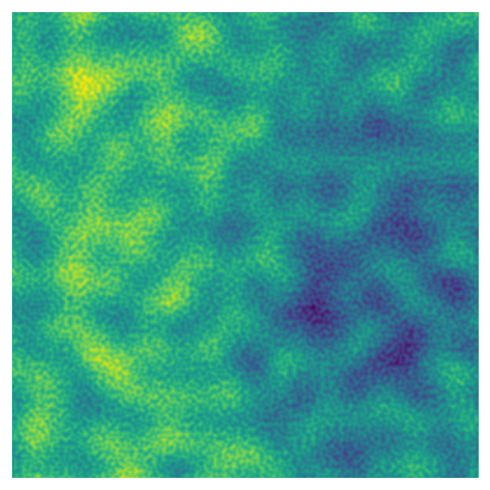
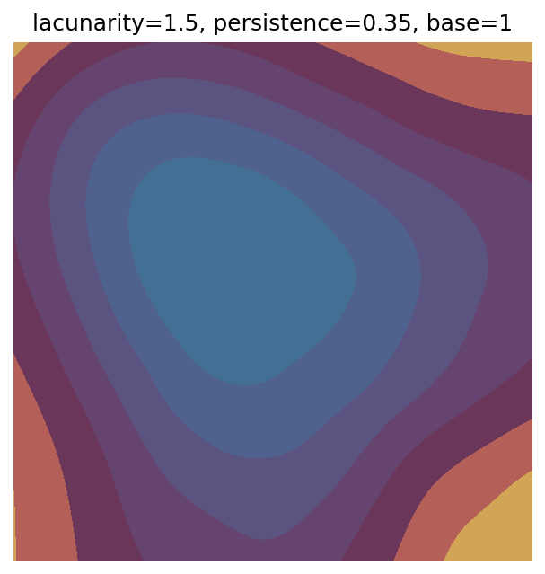
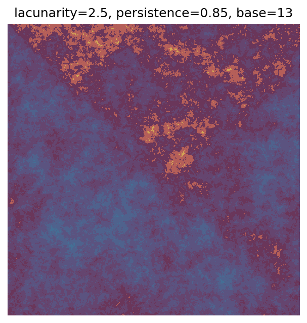
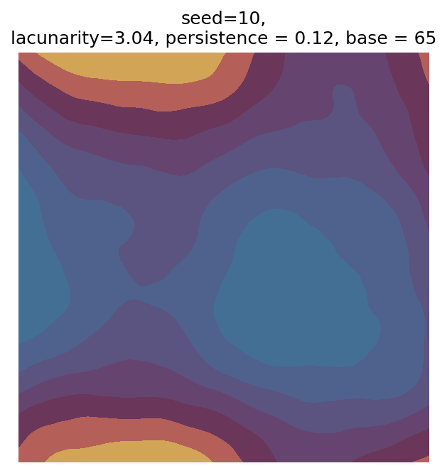
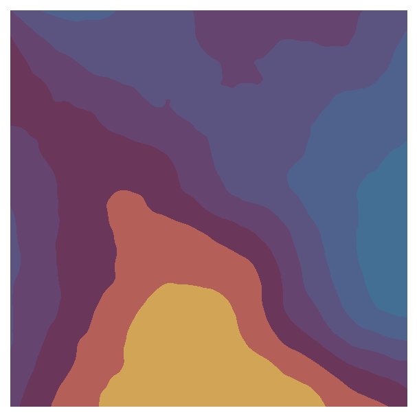

import noise
import numpy as np
import matplotlib.pyplot as pltIntroduction to generative art in Python using Perlin noise
generative art
Python
I’ve struggled to find many introductory generative art tutorials using Python data science libraries (e.g., matplotlib), so I decided to write my own!
Generative art provides great opportunities for learning new mathematical and programming skills. Although I primarily use R for generative art, I mainly use Python at work, and I wanted a resource I could share with other Python practitioners. This tutorial is inspired by Danielle Navarro’s Art from Code tutorial and Yvan Scher’s archipelagos tutorial
Noise in generative art
Generative art is art that is at least partly created by a non-human system, such as a computer program. The artist can build in certain rules that the system has to follow, but at least some decisions are made by the system itself.
One of the primary approaches in generative art is creating data using “noise” to produce shapes or patterns. There are many ways to generate noise with different characteristics, and the approach we’ll use here is Perlin noise. Here’s a two dimensional image made using Perlin noise:

As you can see, this image has a lot of structure - nearby values tend to be similar, creating islands or blobs of higher and lower values.
To make the image above, I used the Python noise package. We’ll also need numpy for handling our arrays of data and the visualisation library matplotlib.
To generate two dimensional Perlin noise like the image above, we can use the pnoise2 function in the noise package. pnoise2 takes two values (e.g., x and y coordinates) and returns Perlin noise generated from those values.
x = 0.001
y = 0.001
perlin_value = noise.pnoise2(x, y)
print(perlin_value)0.0009999900357797742We need to generative lots of values for different points, so lets make a function that creates an array filled with Perlin noise. We’ll use the indices of the array - i.e., the row and column numbers - as the inputs for pnoise2.
def gen_perlin_2d(n_x, n_y, scale=1, **kwargs):
# Create an array for holding Perlin noise
# y coordinates correspond to the rows
perlin_data = np.zeros((n_y, n_x))
# Largest dimension - use to scale values
max_n=max(n_y, n_x)
# Compute noise using indices of the array
for i in range(n_y):
for j in range(n_x):
perlin_data[i,j] = noise.pnoise2(
j/max_n * scale, # pass x value first (j)
i/max_n * scale,
**kwargs # Additional keyword arguments to pass to pnoise2
)
return perlin_dataYou probably noticed that I didn’t just pass the array’s indices, i and j, to pnoise2 - I’ve transformed them based on the size of the array and the scale argument. This approach will make it easier to use to control the features of our art - I’ll talk more about these data transformations below.
First, though, we also need a way to visualise our art. We can use matplotlib’s imshow function to make a heatmap of the data:
def plot_perlin_art(perlin_data, show_plot=True):
# Plot the data as a heatmap (each value = different colour)
fig, ax = plt.subplots(1, 1)
ax.imshow(perlin_data)
ax.axis("off") # remove axes
ax.set_aspect("equal") # equal aspect ratio
if show_plot:
plt.show()
# Return figure and axes handles
return fig, axNow we’re ready to make and plot some Perlin noise!
# Define dimensions of the data
n_x = 1000
n_y = 1000
# Generate data
perlin_data = gen_perlin_2d(n_x, n_y)
# Plot
fig, ax = plot_perlin_art(perlin_data)
Let’s take another look at the data transformations for the indices, i/max_n * scale and j/max_n * scale. First, the indices are divided by the largest dimension of the data - e.g., in a 50 x 100 matrix, all the indices would be divided by 100 before being passed to pnoise2. This transformation scales all the values so they are between 0 and 1, which means that we can use the n_x and n_y to change the size of the array - and therefore the plot’s resolution - without also changing the range of values passed to pnoise2. Lower dimensions will have the same pattern, but make the plot look pixelated:
# Original - smooth
perlin_data = gen_perlin_2d(n_x=1000, n_y=1000)
fig, ax = plot_perlin_art(perlin_data)
# Decreasing resolution
perlin_data = gen_perlin_2d(n_x=50, n_y=50)
fig, ax = plot_perlin_art(perlin_data)
# Even more pixelated
perlin_data = gen_perlin_2d(n_x=10, n_y=10)
fig, ax = plot_perlin_art(perlin_data)
If we want to change the magnitude of the values passed to pnoise2, we can use the function’s scale argument. This argument lets us create larger or smaller patterns:
# Define dimensions of the data
n_x = 1000
n_y = 1000
# Larger pattern with scale < 1
perlin_data = gen_perlin_2d(n_x, n_y, scale=0.1)
fig, ax = plot_perlin_art(perlin_data)
# Default scale (1)
perlin_data = gen_perlin_2d(n_x, n_y, scale=1)
fig, ax = plot_perlin_art(perlin_data)
# Smaller patterns with scale > 1
perlin_data = gen_perlin_2d(n_x, n_y, scale=10)
fig, ax = plot_perlin_art(perlin_data)
These function arguments - n_x, n_y, and scale - are examples of parameters that can be used to change the features of our art. While all of the plots above are made using the same basic rules, the different parameters can create drastically different effects. A large part of generative art is experimenting with different parameter values. In the next section we’ll add some more parameters to this system to change the generated Perlin noise.
Adding parameters
The pnoise2 function has several built-in parameters that control the features of the generated Perlin noise. I’ve set up gen_perlin_2d so that any additional keyword arguments are passed to pnoise2, allowing us to easily modify these parameters.
We’ll experiment with octaves, lacunarity, persistence, and repeatx/repeaty. For generative art, it’s not crucial to understand all of the maths behind these parameters - when we experiment with lots of different parameters, the combined effects are often difficult to predict regardless. However, it’s helpful to know the different options and the ranges of values that produce interesting effects.
Octaves
We can create interesting effects with Perlin noise by adding together Perlin noise with different characteristics. The octaves parameter controls the number of layers added together. By default, the spatial scale of the pattern (i.e., the size of the blobs) and the amplitude of the noise (i.e., the amount that the pattern contributes to the final effect) are both halved with each successive layer: you get smaller and smaller blobs, but the larger shapes remain the dominant pattern because they have relatively higher values.
Here’s how increasing octaves impacts the pattern we’ve been working with:
# Define dimensions of the data
n_x = 1000
n_y = 1000
# One octave (default)
perlin_data = gen_perlin_2d(n_x, n_y, octaves=1)
fig, ax = plot_perlin_art(perlin_data)
# Two octaves
perlin_data = gen_perlin_2d(n_x, n_y, octaves=2)
fig, ax = plot_perlin_art(perlin_data)
# Four octaves
perlin_data = gen_perlin_2d(n_x, n_y, octaves=4)
fig, ax = plot_perlin_art(perlin_data)
# Eight octaves
perlin_data = gen_perlin_2d(n_x, n_y, octaves=8)
fig, ax = plot_perlin_art(perlin_data)

We’re starting to get interesting, detailed patterns as the number of octaves increases. In fact, this is a fractal pattern: if you zoom in to part of the image, you see a pattern that look similar to the image as a whole.
For our generative art system, we need to know that octaves must be an integer greater than or equal to one. It’s also helpful to know that beyond a certain point, further increasing octaves doesn’t have a visible impact on the pattern, which makes sense: since the amplitude of the noise is halved with each layer, successive layers start to have miniscule effects on the generated data.
Lacunarity
When we add together different layers of noise using the octaves parameter, we can also control how the noise changes from layer to layer using lacunarity. This parameter controls how the size of the blobs change with each layer, which is inversely related to the number of blobs (i.e., the “frequency”). The higher the lacunarity value, the more the blob sizes decrease with each new layer. As mentioned above, by default, lacunarity is 2.0 - the frequency doubles (which halves the spatial scale) with each successive layer.
It’s easier to see the impact of adjusting lacunarity when we keep octaves constant (here, 8):
# Define dimensions of the data
n_x = 1000
n_y = 1000
# Number of octaves
octaves = 8
# lacunarity=2 (default)
perlin_data = gen_perlin_2d(n_x, n_y, octaves=octaves, lacunarity=2)
fig, ax = plot_perlin_art(perlin_data)
# lacunarity=3.25 (doesn't have to be an integer!)
perlin_data = gen_perlin_2d(n_x, n_y, octaves=octaves, lacunarity=3.25)
fig, ax = plot_perlin_art(perlin_data)
# lacunarity=5
perlin_data = gen_perlin_2d(n_x, n_y, octaves=octaves, lacunarity=5)
fig, ax = plot_perlin_art(perlin_data)
# lacunarity=10
perlin_data = gen_perlin_2d(n_x, n_y, octaves=octaves, lacunarity=10)
fig, ax = plot_perlin_art(perlin_data)

Higher values tend to create busier patterns, which makes sense if we think about the fact that the amplitude of the noise also decays with each layer. If we’re adding smaller shapes to the image at an earlier stage - before the amplitude has had a chance to decay as much - they’ll have a greater impact on the final values.
For our system, values over one are the most interesting as they’ll add details to the image, and lacunarity does not have to be an integer.
Persistence
We can also control how much each layer contributes to the final image using persistence. By default, persistence is 0.5, which halves the amplitude of the noise in each successive layer. If persistence is greater than 1, successive layers contribute more and more to final image, while less than 1 means that each later layer has less of an impact.
Here’s the results of changing persistence while keeping octaves equal to 8:
# Define dimensions of the data
n_x = 1000
n_y = 1000
# Number of octaves
octaves = 8
# persistence=1.25
perlin_data = gen_perlin_2d(n_x, n_y, octaves=octaves, persistence=1.25)
fig, ax = plot_perlin_art(perlin_data)
# persistence=1
perlin_data = gen_perlin_2d(n_x, n_y, octaves=octaves, persistence=1)
fig, ax = plot_perlin_art(perlin_data)
# persistence=0.5 (default)
perlin_data = gen_perlin_2d(n_x, n_y, octaves=octaves, persistence=0.5)
fig, ax = plot_perlin_art(perlin_data)
# persistence=0.25
perlin_data = gen_perlin_2d(n_x, n_y, octaves=octaves, persistence=0.25)
fig, ax = plot_perlin_art(perlin_data)This parameter can be any value greater than zero. However, values too close to 0 or too far over 1 tend to have less interesting effects because individual layers either have too little or too much impact on the final image, respectively.
Tiling
Finally, the repeatx and repeaty parameters allow us to repeat the noise pattern to create a tiled effect. Both parameters take the tile size as input, so we want to use a value that is less than scale (which is 1 by default).
# Define dimensions of the data
n_x = 1000
n_y = 1000
# Parameters
scale = 2 # scale
octaves = 8 # number of octaves
n_tiles = 4 # number of tiles
# Tiling both x and y (tile size = scale/n_tiles)
perlin_data = gen_perlin_2d(
n_x,
n_y,
scale=scale,
octaves=octaves,
repeatx=scale/n_tiles,
repeaty=scale/n_tiles
)
fig, ax = plot_perlin_art(perlin_data)
# Tiling x only
perlin_data = gen_perlin_2d(
n_x,
n_y,
scale=scale,
octaves=octaves,
repeatx=scale/n_tiles
)
fig, ax = plot_perlin_art(perlin_data)
# Tiling y only
perlin_data = gen_perlin_2d(
n_x,
n_y,
scale=scale,
octaves=octaves,
repeaty=scale/n_tiles
)
fig, ax = plot_perlin_art(perlin_data)If the tiles get too small, the transitions between tiles isn’t as smooth (which can also be an interesting effect). I’m not familiar with the maths behind this parameter, though, so you’ll have to experiment with the values to figure out where smooth tiles end!
Adding randomness
Our parameters are like a recipe for our generative art. The parameters for baking chocolate chip cookies would be factors like
- the ingredients
- how much of each ingredient to use
- how the ingredients are mixed
- the amount of dough to use for each cookie
- the location of the cookie on the baking tray
- the oven temperature
- the baking time
However, even if you follow the exact same steps, the resulting cookies will not be identical from batch to batch. There will be slight differences outside of our control, such as the precise locations of the chocolate chips, the shape of each cookie as it spreads during baking, and the pattern of browning on the surface. This variability is due to randomness that is intrinsic to baking.
In the same way, we can get different outputs from our generative art system, even when we use the same parameters, because we can generate different versions of Perlin noise. In pnoise2, the base argument controls the version of Perlin noise that is generated. We also want to experiment with this value because some versions will produce subjectively nicer or prettier art, just by chance. So far we’ve just used pnoise2’s default base value of 1, which is why all of our outputs look kind of similar - even when the parameters are different.
Here are different versions of Perlin noise generated using the same parameters:
# Define dimensions of the data
n_x = 1000
n_y = 1000
# Number of octaves
octaves = 8
# Number of versions to plot
n_versions = 4
for i in range(n_versions):
# Use i as the base value
perlin_data = gen_perlin_2d(n_x, n_y, octaves=octaves, base=i)
fig, ax = plot_perlin_art(perlin_data)
Note that unlike pnoise2, many other functions for generating noise or random data do not produce the same output every time by default. In the “Scanning parameters” section, I’ll go over how to make these functions reproducible, too.
Experimenting with colour
Colours can also be seen as parameters, but they deserve special attention since they have so much impact on the final output. So far we’ve been visualising our art using matplotlib’s default colourmap, “viridis”. Viridis is an example of a sequential colourmap - both the hue and lightness of the colours gradually change as the data’s values change. This relationship is easier to see if we turn on the colourbar:
# Generate data
perlin_data = gen_perlin_2d(n_x = 1000, n_y = 1000, octaves=8)
# Plot the data as a heatmap with a colourbar
im = plt.imshow(perlin_data)
plt.colorbar(im) # colourbar
plt.axis("off") # remove axes
plt.show()However, our matplotlib plotting function, imshow, works with any of the built-in matplotlib colourmaps. Let’s add an argument to our plotting function plot_perlin_art that allows us to pass the colourmap to imshow.
def plot_perlin_art(perlin_data, cmap="viridis", show_plot=True):
# Plot the data as a heatmap
fig, ax = plt.subplots(1, 1)
ax.imshow(perlin_data, cmap)
ax.axis("off") # remove axes
ax.set_aspect("equal") # equal aspect ratio
if show_plot:
plt.show()
# Return figure and axes handles
return fig, axWe can now try out different colourmaps. We’ll use the same data that was generated above so any differences will just be due to changing the colours.
Here’s a different sequential colourmap, “magma”:
# A different sequential colourmap
fig, ax = plot_perlin_art(perlin_data, cmap="magma")If this code was for a data visualisation progject, a sequential colourmap would probably make the most sense because we have continuous data with clear low and high values. In generative art, however, there are no rules. We can plot our Perlin noise using any type of colourmap:
# Diverging - middle values are lightest,
# lowest and highest are darkest (but different colours)
fig, ax = plot_perlin_art(perlin_data, cmap="Spectral")
# Cyclic - colourmap loops around # (useful for cyclic data like time of day)
fig, ax = plot_perlin_art(perlin_data, cmap="twilight")
# Qualitative (discrete values)
fig, ax = plot_perlin_art(perlin_data, cmap="tab20b")The qualitative colourmap in particular produces a very different effect: it maps a range of values onto each colour, producing bands of colours.
We’re also not limited to matplotlib’s colourmaps. There are many Python packages (such as palettable) that provide additional colourmaps, and we can also design our own:
# Import classes for creating colourmaps
from matplotlib.colors import LinearSegmentedColormap, ListedColormap
# List of colours
clrs = ['#d2a556', '#b55f59','#6a365a','#65456f','#5b5380','#4f628d','#446f95']
# Qualitative colourmap (discrete values)
cmap_qualitative = ListedColormap(clrs)
fig, ax = plot_perlin_art(perlin_data, cmap=cmap_qualitative)
# Continuous colourmap (adds many additional interpolated colours)
cmap_continuous = LinearSegmentedColormap.from_list(name="my_cmap", colors=clrs)
fig, ax = plot_perlin_art(perlin_data, cmap=cmap_continuous)These colourmaps wouldn’t be good for data visualisation: the qualitative colourmap has similar colours that are difficult to distinguish, and the continuous colourmap isn’t perceptually uniform. However, as I said before, the same rules don’t apply to art! In fact, using colours in atypical ways can create interesting effects - like the way the yellow and orange stands out from the background purple and blue colours in the plot above.
Scanning parameters
We now have many ways to produce different outputs from our generative art system. We could experiment with the different options by manually changing the inputs, like we have above. However, that approach can quickly get tedious, especially in more complex systems where the code takes more time to run. We can instead speed up this process by scanning the possible parameters.
One scan approach is a grid search - we choose possible values for each parameter, then use each combination of parameters. Here I’ve scanned lacunarity and persistence using a grid search, while keeping the other parameters fixed. I also change the base value for each output, as otherwise the underlying data will have a similar structure despite the parameter changes.
# Values to scan for lacunarity and persistence
# I've made the values evenly spaced here, but they do not have to be.
scan_lacunarity = np.linspace(1.5, 3.5, 5)
scan_persistence = np.linspace(0.1, 1.1, 5)
# Fixed parameters
n_x = 1000
n_y = 1000
octaves = 8
# Custom continuous colourmap
clrs = ['#d2a556', '#b55f59','#6a365a','#65456f','#5b5380','#4f628d','#446f95']
cmap = ListedColormap(clrs)
# Variable to use to set different base values
# (so the randomly generated data is markedly different for each output)
scan_count = 0
# Scan
for lacunarity in scan_lacunarity:
for persistence in scan_persistence:
# Generate data using specified parameters
perlin_data = gen_perlin_2d(
n_x=n_x,
n_y=n_y,
octaves=octaves,
lacunarity=lacunarity,
persistence=persistence,
base=scan_count
)
# Plot with custom colourmap
fig, ax = plot_perlin_art(perlin_data, cmap=cmap, show_plot=False)
# Title with parameter values and base value
ax.set_title(f"lacunarity={lacunarity}, persistence={persistence}, base={scan_count}")
plt.show()
# Increment to change base for each iteration
scan_count += 1




Grid searches benefit from being exhaustive - we try out each combination of parameters - but they can quickly become impractical when there is a large number of parameters. Excluding colour, we have eight parameters in our simple system (octaves, lacunarity, persistence, scale, n_x, n_y, repeatx, and repeaty) - even testing out just five values for each parameter gives us 58 = 390,625 different combinations! Because we can only realistically test a small number of parameter values, we also miss all of the intermediate values.
Another option that helps address these issues is a random search where we randomly select the parameter values. We can draw from a discrete list of options, like in the grid search, or select from a continuous range of values, allowing us to see combinations that wouldn’t arise from our grid search. I also find random searches more fun because I have no idea what the next output will look like!
Here’s a function that randomly selects lacunarity and persistence, as well as the base value. I’ve set the default parameter ranges to the same as our grid search so we can easily compare their results. Since lacunarity and persistence are floats, we can generate values for them using np.random.uniform. This numpy function draws from a uniform distribution, which means that all values between the specified lower and upper limits are equally likely to be chosen. For base we need an integer, so we instead use np.random.randint.
Unlike our Perlin noise generator, np.random.uniform and np.random.randint will give us a different result each time they are run - however, we can make the results reproducible by setting a seed for numpy’s random number generator using np.random.seed.
# Generate random parameters
def gen_perlin_art_param(
seed=0, # seed for reproducibility
lacunarity_l=1.5, # lower limit for lacunarity
lacunarity_h=3.5, # upper limit for lacunarity
persistence_l=0.1, # lower limit for persistence
persistence_h=1.1, # upper limit for persistence
base_l=1, # lower limit for base
base_h=99, # upper limit for base
octaves=8, # fixed parameters
n_x=1000,
n_y=1000
):
# Dictionary for storing parameters
param = {}
# Set seed
np.random.seed(seed)
# Select lacunarity and persistence from uniform distributions with specified bounds
# Round to two decimal places so easier to print and since small changes do not greatly
# impact the results for these parameters
# (rounding may not be appropriate for other parameters)
param["lacunarity"] = round(np.random.uniform(low=lacunarity_l, high=lacunarity_h),2)
param["persistence"] = round(np.random.uniform(low=persistence_l, high=persistence_h),2)
# Randomly generate an integer for the base value
param["base"] = np.random.randint(low=base_l, high=base_h)
# Add fixed parameters to dictionary
param["octaves"] = octaves
param["n_x"] = n_x
param["n_y"] = n_y
return paramUsing the seed argument, we can change the parameters generated or reproduce earlier parameters:
# seed = 0
param = gen_perlin_art_param(seed=0)
print(param)
# Different parameters with seed = 5
param = gen_perlin_art_param(seed=5)
print(param)
# Returning to seed = 0 gives same results as before
param = gen_perlin_art_param(seed=0)
print(param){'lacunarity': 2.6, 'persistence': 0.82, 'base': 68, 'octaves': 8, 'n_x': 1000, 'n_y': 1000}
{'lacunarity': 1.94, 'persistence': 0.97, 'base': 17, 'octaves': 8, 'n_x': 1000, 'n_y': 1000}
{'lacunarity': 2.6, 'persistence': 0.82, 'base': 68, 'octaves': 8, 'n_x': 1000, 'n_y': 1000}Let’s use this new function to generate 25 outputs from our system. We pass the dictionary containing the parameters to gen_perlin_2d using the ** prefix, which will unpack the dictionary and use the items as keyword arguments.
# Number of plots to produce
n_outputs = 25
# Variable for shifting seed values
starting_seed = 1
# Random scan
for i in range(n_outputs):
# Generate parameters
seed_i = i + starting_seed
param = gen_perlin_art_param(seed=seed_i)
# Generate data
perlin_data = gen_perlin_2d(**param)
# Plot
fig, ax = plot_perlin_art(perlin_data, cmap=cmap, show_plot=False)
ax.set_title(
f"seed={seed_i},\n"
f"lacunarity={param['lacunarity']}, "
f"persistence = {param['persistence']}, "
f"base = {param['base']}"
)
plt.show()

Even though this search was random, we still get similar ranges of outputs as in our grid search, and we also see parameter values that weren’t possible in our original search.
Using our seed, we can reproduce any of these outputs (for example, if we wanted to save it at a higher resolution). Because we also output the parameters that result from that seed, we can also easily experiment with changing the parameters or using different colours. Let’s do so with seed = 7, which I think has an interesting pattern:
seed = 7
# Original version
param = gen_perlin_art_param(seed=seed)
perlin_data = gen_perlin_2d(**param)
fig, ax = plot_perlin_art(perlin_data, cmap=cmap)
# Manually change the parameters to decrease persistence
param["persistence"] = param["persistence"] / 2
perlin_data = gen_perlin_2d(**param)
fig, ax = plot_perlin_art(perlin_data, cmap=cmap)
# Also change the colourmap
fig, ax = plot_perlin_art(perlin_data, cmap="twilight")

When I explore one of my generative art systems, I always run multiple scans. I first use ranges of parameter values that look interesting based on my initial manual explorations. In subsequent scans, I’ll either widen the ranges to explore new parts of parameter space or narrow them to create more outputs from parameters that produce nice effects. You can even make lots of outputs from exactly the same parameter values by only changing the noise generated (e.g., using the base value in our system). Not all of the scan outputs will look nice or even reasonable, especially when pushing parameters to extreme values, but you’ll also often see surprising outputs that look completely different from your initial explorations.
Importantly, changing the scan set up means that the random seeds from the previous scan will produce different parameters, so you can no longer use the seeds to make any earlier outputs. To reproduce all outputs, you’ll need to save the parameters used for each output or the code used for that scan (e.g., using version control or a function that you don’t modify).
Next steps
We now have a fledgling generative art system, but there are many ways we can extend or modify it. Here are some ideas to explore:
- Add more parameters and the colourmap settings to the scan.
- Create your own custom colourmaps.
- Change the colours and parameters to create natural patterns or shapes, like clouds or islands (see Yvan Scher’s tutorial and this code for inspiration).
We can also add a second data generation step (with additional parameters!) that modifies perlin_data using other approaches:
# Generate Perlin data
n_x = 1000
n_y = 1000
perlin_data = gen_perlin_2d(n_x=n_x, n_y=n_y, octaves=8)
# Parameters for modifying Perlin data
add_high = np.max(abs(perlin_data)) * 1.5 # max amount that can be added
add_low = add_high/5 # min amount that can be added
# Generate numbers to add to columns
seed = 0 # seed for random number generation
np.random.seed(seed)
vec = np.random.uniform(low=add_low, high=add_high, size=n_y)
# Add to perlin_data (using broadcasting)
perlin_data = perlin_data + vec
# Plot
fig, ax = plot_perlin_art(perlin_data)Additionally, we can use Perlin noise in generative art without directly visualising the noise itself as a heatmap. Here’s a simple example that uses Perlin noise to set the colours and/or sizes of a grid of points:
# Create grid of points to plot
n_x = 25
n_y = 25
max_n=max(n_x, n_y)
scale = 1
x = np.linspace(0, n_x, n_x) / (max_n * scale) # as in gen_perlin_2d, scale values between 0 and scale
y = np.linspace(0, n_y, n_y) / (max_n * scale)
points_x, points_y = np.meshgrid(x, y) # grid
# Get Perlin noise for each value in the grid
octaves=8
persistence=0.2
base=10
perlin_data = np.zeros((n_y, n_x))
for i in range(n_y):
for j in range(n_x):
perlin_data[i, j] = noise.pnoise2(
points_x[i, j], points_y[i, j], octaves=octaves, persistence=persistence, base=base
)
# Shift Perlin noise so >= 0 so can use to control size
min_perlin = np.min(perlin_data)
perlin_data = perlin_data + np.abs(min_perlin)
# Figure settings
size_multiplier = 25 # multiplier for size of points
cmap="twilight" # colourmap
def apply_fig_settings(fig, ax):
fig.set_facecolor("#272727") # background colour
ax.axis("off") # remove axes
ax.set_aspect("equal") # equal aspect ratio
plt.show()
# Plot, setting size based on Perlin noise
fig, ax = plt.subplots(1, 1)
ax.scatter(
points_x,
points_y,
s=(perlin_data * size_multiplier)
)
apply_fig_settings(fig, ax)
# Plot, setting colour based on Perlin noise
fig, ax = plt.subplots(1, 1)
ax.scatter(
points_x,
points_y,
s=size_multiplier,
c=(perlin_data * size_multiplier),
cmap=cmap
)
apply_fig_settings(fig, ax)
# Plot, setting size and colour based on Perlin noise
fig, ax = plt.subplots(1, 1)
ax.scatter(
points_x,
points_y,
s=(perlin_data * size_multiplier),
c=(perlin_data * size_multiplier),
cmap=cmap
)
apply_fig_settings(fig, ax)The uses for Perlin noise can also be more subtle. For example, in my Coastlines system, I used 1D Perlin noise to smoothly vary the transparency and distributions of the points that make up the narrow vertical lines.
We can also make improvements from a software engineering perspective; for example, you can
- Create functions for scanning parameters.
- Create a separate module for your generative art functions so they’re easy to reuse across different projects.
- Develop a workflow for scanning parameters and saving the generated plots (make sure the scans are reproducible!).
Using good software engineering practices becomes crucial as systems become more complex - otherwise, it becomes difficult to explore the system and reproduce desired outputs.
On the subject of reproducibility, I used Python 3.11.9 for this tutorial with these package versions:
matplotlib==3.9.0
noise==1.2.2
numpy==2.0.0Additional resources
During my search, I found a couple of introductory tutorials for generative art in Python:
Geoffrey Bradway’s tutorial on creating art based on Voronoi diagrams
Nicola Rennie’s tutorial using another Python plotting library,
plotnine
There are also lots of tutorials using turtle graphics, rather than scientific/data visualisation libraries.
Most generative art advice is also applicable to any programming language - here are some of my favourite essays: